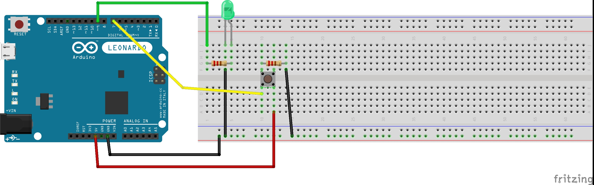
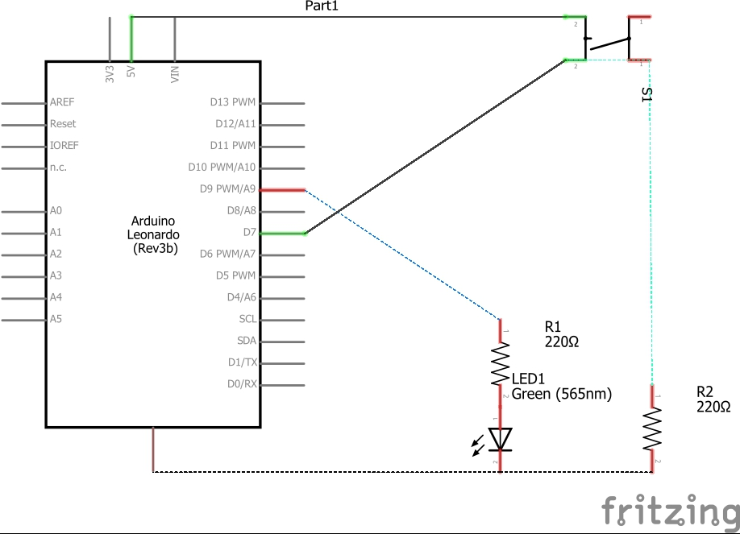

Zach Thomas Assignment 2: Fade!

Here is a short gif of the functionality of my circuit. When the button is pressed the light will fade in and out three times.  Here is the breadboard diagram for my circuit.  Here is the technical schematic of the circuit.
/*
Zach Thomas
HCDE 439 Assignment 2
*/
int led = 9; // the PWM pin the LED is attached to
int button = 7; // the pin the button is attached to
int brightness = 0; // how bright the LED is
int fadeAmount = 6; // how many points to fade the LED by
int buttonState = 0; // boolean for if the button is pushed or not
// the setup routine runs once when you press reset:
void setup() {
pinMode(led, OUTPUT); // the led pin is an output
pinMode(button, INPUT); // the button pin is an input
}
// the loop routine runs over and over again forever:
void loop() {
buttonState = digitalRead(button); // set boolean for if the button is pressed or not
if(buttonState == HIGH) { // if the button is pressed then start fade cycle
for(int i = 0; i < 255; i++) { // the led will fade in and out fadeAmount divided by 2 times
analogWrite(led, brightness); // set the brightness of the LED
brightness = brightness + fadeAmount; // change the brightness by the set incriment
if(brightness <= 0 || brightness >= 255) { // if the light is full brightness or off then switch the sign of the change in brightness
fadeAmount = -fadeAmount;
}
delay(30); // wait 30 milliseconds
}
} else { // if the button isn't pressed turn the led off
digitalWrite(led, LOW);
}
}